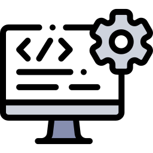

Desenvolvedor de Software
O que é Desenvolvedor de Software?
Um desenvolvedor de software é um profissional que cria, testa e mantém programas de computador ou aplicações.Eles são responsáveis por escrever código que permite que software funcione conforme o planejado, além de identificar e corrigir problemas e melhorar a funcionalidade do software. Os desenvolvedores de software podem trabalhar em uma variedade de áreas, incluindo aplicativos para computadores, dispositivos móveis, sistemas operacionais, e software embarcado.
O que se Estuda no Desenvolvedor de Software?
O curso para se tornar um desenvolvedor de software (frequentemente encontrado em programas de Ciência da Computação, Engenharia de Software ou Sistemas de Informação) abrange uma ampla gama de disciplinas que fornecem aos alunos as habilidades e conhecimentos necessários para projetar, desenvolver, testar e manter software. Aqui estão algumas das principais áreas de estudo:
- Fundamentos de Programação: Introdução a linguagens de programação, lógica de programação, algoritmos e estruturas de dados. Exemplos de linguagens incluem Python, Java, C++, e JavaScript.
- Estruturas de Dados e Algoritmos: Estudo de como organizar e processar dados de forma eficiente, incluindo listas, pilhas, filas, árvores, grafos e algoritmos de ordenação e busca.
- Engenharia de Software: Princípios e práticas de desenvolvimento de software, ciclo de vida do desenvolvimento de software, metodologias ágeis, e gestão de projetos de software.
- Sistemas Operacionais: Fundamentos dos sistemas operacionais, gerenciamento de processos, memória, sistemas de arquivos e segurança.
- Banco de Dados: Modelagem de dados, design de banco de dados, linguagens de consulta (como SQL), e sistemas de gerenciamento de banco de dados (SGBDs).
- Desenvolvimento Web: Tecnologias para criar aplicações web, incluindo HTML, CSS, JavaScript, frameworks front-end (como React ou Angular) e back-end (como Node.js, Django).
- Desenvolvimento Mobile: Criação de aplicativos para dispositivos móveis, usando plataformas como Android (Java/Kotlin) e iOS (Swift).
- Arquitetura de Computadores: Estrutura e funcionamento dos computadores, incluindo processadores, memória e dispositivos de entrada/saída.
- Redes de Computadores: Fundamentos das redes de computadores, protocolos de comunicação, arquitetura de redes, e segurança de redes.
- Segurança da Informação: Princípios de segurança em sistemas de informação, criptografia, segurança de redes e práticas de segurança no desenvolvimento de software.
- Inteligência Artificial e Aprendizado de Máquina: Fundamentos de IA, algoritmos de aprendizado de máquina, redes neurais, e aplicações de IA.
- Matemática e Lógica: Matemática discreta, álgebra linear, cálculo, probabilidade e estatística, lógica booleana.
- Interfaces de Usuário e Experiência do Usuário (UI/UX): Design de interfaces de usuário, princípios de usabilidade, e avaliação de experiência do usuário.
Quais são as áreas de atuação de um Desenvolvedor?
Um desenvolvedor de software pode atuar em diversas áreas, cada uma com suas particularidades e demandas específicas. As principais áreas de atuação incluem:
- Desenvolvimento Web: Front-end: Foco na interface do usuário e na experiência do usuário (UI/UX). Linguagens e tecnologias comuns incluem HTML, CSS, JavaScript, e frameworks como React, Angular, e Vue.js.
- Desenvolvimento Mobile: Android: Utiliza Java ou Kotlin para criar aplicativos móveis para dispositivos Android.
- Desenvolvimento de Jogos: Desenvolvimento de Jogos: Criação de jogos para várias plataformas usando motores de jogos como Unity, Unreal Engine, ou Godot.
- Desenvolvimento de Sistemas Embarcados: Criação de software para dispositivos com recursos limitados, como eletrodomésticos, automóveis, dispositivos médicos, e Internet das Coisas (IoT). Linguagens comuns incluem C e C++.
- Desenvolvimento de Software Corporativo: Criação de aplicações empresariais, como sistemas de gestão empresarial (ERP), sistemas de gerenciamento de relacionamento com clientes (CRM), e outras soluções de software que atendem às necessidades empresariais.
- Desenvolvimento de Aplicações Desktop: Criação de software para sistemas operacionais desktop, como Windows, macOS, e Linux. Tecnologias comuns incluem .NET, Electron, e frameworks específicos para cada sistema operacional.
- Inteligência Artificial e Aprendizado de Máquina: Desenvolvimento de algoritmos de IA e modelos de aprendizado de máquina para resolver problemas complexos, como reconhecimento de padrões, processamento de linguagem natural, e análise preditiva.
- Desenvolvimento de Sistemas de Realidade Aumentada (AR) e Realidade Virtual (VR): Criação de aplicações imersivas para AR e VR, usando tecnologias como Unity, Unreal Engine, e frameworks específicos de AR/VR.
- Desenvolvimento de Softwares de Segurança: Criação de soluções para proteger sistemas e dados contra ameaças cibernéticas, incluindo software antivírus, firewalls, e sistemas de detecção de intrusão.
- Desenvolvimento de Sistemas de Automação e Controle: Desenvolvimento de software para automação industrial, sistemas de controle e monitoramento, e robótica.
- Desenvolvimento de Blockchain e Criptomoedas: Criação de aplicações descentralizadas (dApps), contratos inteligentes, e soluções baseadas em blockchain.
Essas áreas representam apenas uma visão geral das possibilidades de atuação. A carreira de um desenvolvedor de software é diversificada e pode evoluir conforme novas tecnologias e necessidades de mercado surgem.
Olá! Queremos proporcionar a melhor experiência possível em nosso site. Se você tiver sugestões para torná-lo mais agradável e útil, por favor, envie-nos um e-mail para Aghamenon Toberlock Estudos. Estamos ansiosos para ouvir suas ideias e melhorar nosso site juntos!